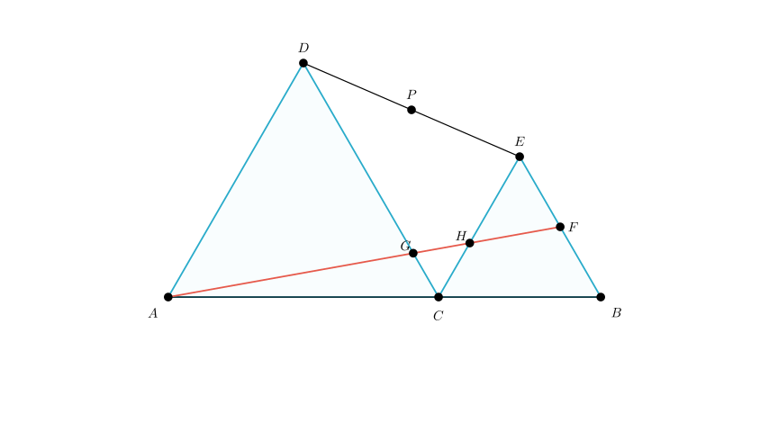
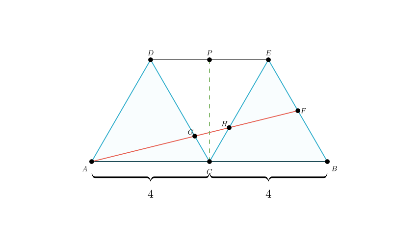
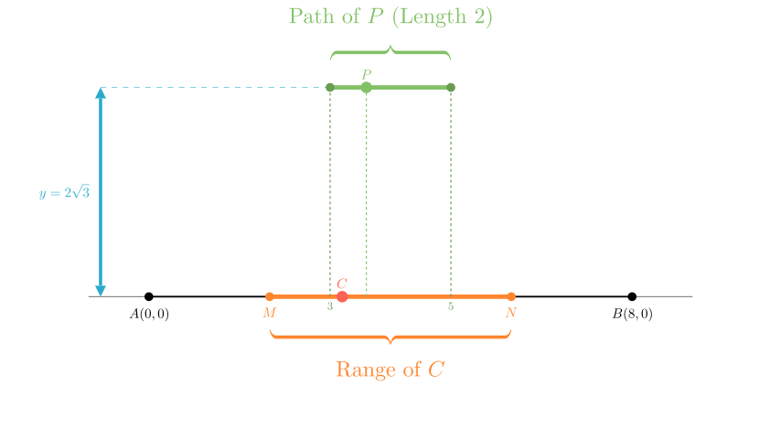

Problem Statement: As shown in Figure 1, given line segment $AB=8$. Point $C$ is a moving point on $AB$ (excluding $A$ and $B$). Two equilateral triangles $\triangle ACD$ and $\triangle BCE$ are constructed on the same side of $AB$. Connect $DE$. Points $P$ and $F$ are the midpoints of $DE$ and $BE$ respectively. Connect $AF$, intersecting $DC$ at $G$ and $CE$ at $H$.
(1) Write down all similar triangles in the figure (excluding the equilateral triangles $\triangle ACD$ and $\triangle BCE$). (2) When point $C$ is the midpoint of $AB$ (as shown in Figure 2), find the length of $CP$ and the ratio $AG:GH:HF$. (3) Points $M$ and $N$ are two points on line segment $AB$ such that $AM=BN=2$. When point $C$ moves from point $M$ to point $N$, find the length of the path traveled by point $P$.
Solution Approach: We will solve this geometry problem step-by-step. 1. Similarity Analysis: We will identify parallel lines created by the $60^\circ$ angles of the equilateral triangles to find similar triangles. 2. Specific Case ($C$ is midpoint): We will use the symmetry of the figure and the ratios established in step 1 to calculate the length of $CP$ and the segment ratios along $AF$. 3. Locus of Point $P$: We will use a coordinate geometry approach to express the coordinates of $P$ in terms of the position of $C$, allowing us to determine the path length as $C$ moves between $M$ and $N$.

Part 1: Identifying Similar Triangles
To find similar triangles, we look for equal angles, particularly those derived from parallel lines.
Therefore, $\triangle ACG \sim \triangle ABF$.
Next, observe that $\angle DAC = \angle ECB = 60^\circ$. This implies $AD \parallel CE$.
So, the similar triangles are $\triangle ACG \sim \triangle ABF$ and $\triangle GCH \sim \triangle GDA$.

Part 2: Calculation when C is the Midpoint
Given $AB = 8$ and $C$ is the midpoint, we have $AC = CB = 4$. This makes $\triangle ACD$ and $\triangle BCE$ congruent equilateral triangles with side length 4.
Finding the length of CP: 1. Because $\triangle ACD \cong \triangle BCE$, we have $CD = CE = 4$. 2. Angle $\angle DCE = 180^\circ - \angle ACD - \angle BCE = 180^\circ - 60^\circ - 60^\circ = 60^\circ$. 3. Since $CD = CE$ and $\angle DCE = 60^\circ$, $\triangle DCE$ is also an equilateral triangle with side length 4. 4. $P$ is the midpoint of $DE$. In equilateral $\triangle DCE$, the median $CP$ is also the altitude. 5. Using the altitude formula for an equilateral triangle with side $a=4$: $$CP = \frac{\sqrt{3}}{2} \times \text{side} = \frac{\sqrt{3}}{2} \times 4 = 2\sqrt{3}$$
Finding the ratio AG : GH : HF: 1. Analyze $\triangle ACG \sim \triangle ABF$: * Similarity ratio: $\frac{AC}{AB} = \frac{4}{8} = \frac{1}{2}$. * Therefore, $\frac{AG}{AF} = \frac{1}{2}$, which implies $AG = GF$. * Also, $\frac{CG}{BF} = \frac{1}{2}$. Since $F$ is the midpoint of $BE$ (side 4), $BF = 2$. * So, $CG = \frac{1}{2} \times 2 = 1$.
Therefore, $\frac{GH}{GA} = \frac{1}{3}$, which implies $GA = 3GH$.
Combine the ratios:
Result: $AG : GH : HF = 3 : 1 : 2$.

Part 3: The Path of Point P
We need to find the path length of $P$ as $C$ moves from $M$ to $N$. Let's set up a coordinate system with $A$ at the origin $(0,0)$. Line segment $AB$ lies on the x-axis, so $B$ is at $(8,0)$.
Coordinates of Key Points: Let the position of $C$ be $(x, 0)$. 1. Point D: $D$ is the vertex of equilateral $\triangle ACD$. * Side length $AC = x$. * $D = ( \frac{x}{2}, \frac{\sqrt{3}}{2}x )$. 2. Point E: $E$ is the vertex of equilateral $\triangle BCE$. * Side length $CB = 8-x$. * The x-coordinate of $E$ is $x + \frac{8-x}{2} = \frac{x+8}{2}$. * The y-coordinate of $E$ is $\frac{\sqrt{3}}{2}(8-x)$. * $E = ( \frac{x+8}{2}, \frac{\sqrt{3}(8-x)}{2} )$.
Coordinates of P (Midpoint of DE): $$x_P = \frac{x_D + x_E}{2} = \frac{1}{2} \left( \frac{x}{2} + \frac{x+8}{2} \right) = \frac{1}{2} \left( \frac{2x+8}{2} \right) = \frac{x}{2} + 2$$ $$y_P = \frac{y_D + y_E}{2} = \frac{1}{2} \left( \frac{\sqrt{3}x}{2} + \frac{\sqrt{3}(8-x)}{2} \right) = \frac{1}{2} \left( \frac{\sqrt{3}x + 8\sqrt{3} - \sqrt{3}x}{2} \right) = \frac{1}{2} (4\sqrt{3}) = 2\sqrt{3}$$
Analysis of the Path: * The y-coordinate of $P$ is constant ($2\sqrt{3}$). This means the path of $P$ is a horizontal line segment. * The x-coordinate of $P$ depends linearly on $x$: $x_P = \frac{x}{2} + 2$.
Calculating the Length: * $C$ moves from $M$ to $N$. * Given $AM = 2$, the starting x-value for $C$ is $x_{start} = 2$. * Given $BN = 2$, the ending x-value for $C$ is $x_{end} = 8 - 2 = 6$. * Start position of P: $x_P = \frac{2}{2} + 2 = 3$. * End position of P: $x_P = \frac{6}{2} + 2 = 5$. * Path Length: $5 - 3 = 2$.
Final Answers: (1) $\triangle ACG \sim \triangle ABF$ and $\triangle GCH \sim \triangle GDA$. (2) $CP = 2\sqrt{3}$; Ratio $AG:GH:HF = 3:1:2$. (3) The path length of point $P$ is 2.